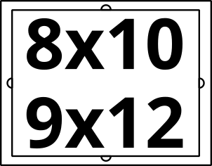

Copyright © Crane Softwrights Ltd.
Development: https://github.com/CraneSoftwrights/board-baseball
Tip jar: https://paypal.me/CraneSoftwrights
Browser pages:
https://cranesoftwrights.github.io/board-baseball/en/build.md.html
In this build/ directory are
the resources used to build two versions of the game using a laser
cutter to etch and cut material:


| Legend | Key |
|---|---|
| A = alignment hole B = panel trench C = panel D = panel cradle E = compartment F = compartment lid G = main board |
 |
The design is optimized for six levels of 1/8”=3mm material that are laminated together to create a box 3/4”=19mm tall. Alternatively, one can use 3/16”=5mm material, but of course this would make the box 3/8” taller at 9/8”=29mm. This is mentioned because quality 1/8”=3mm material may be hard to find.
Each level is made up of a number of SVG layers in the design SVG master file. See the design notes.
The levels are numbered to be distinguished from each other. At this time there are two choices for the back level: number 6 is blank and number 7 has a simple border. It is anticipated that future candidate back covers might include a written or graphic summary of the rules of play.
Levels 2 and 5 are special in that they have no visible printed or play content, only holes, chambers, and printed magnet polarity indicators. This property permits you to use an alternative material for levels 2 and 5 than for the other levels. All of the other levels have at least some exposure to the user, and the burning is designed to work if the material has only one “good” side, so it is not necessary to purchase material that has two “good” sides.
The test level is positioned such that it can overlay level 2. After burning the test level, one can burn a second test on the flip side of the same piece of material. Thus, one could do a first test burn, adjust the settings and orient the surface positioning a different level 2 at the home position and do a second test burn with the new parameters. Then level 2 burns can overlay the test burns.
Two of the levels are designed to create single-board game boards, SBF (single board front) and SBB (single board back).
Many of the layers of the 3D game boards are used in the single-board game boards.
In addition to the board material being cut and assembled, the following items are useful in construction and play. Included are illustrative examples of the commercial availability of some of the materials, though these are not to be regarded as recommendations or requirements, just examples of materials that have worked for the two designers:
https://www.amazon.ca/dp/B08F72SLYDhttps://www.amazon.ca/dp/B08B41LNS4
https://www.amazon.ca/dp/B07RYCRYY3
but the screws provided are too long so 3/16”-length screws need to
be purchased separately
https://www.amazon.ca/dp/B09XJ4SS23
and https://www.amazon.ca/dp/B09XVBL8SKRemember that the magnets are small and dangerous for children should they become loose, much like the small dice and cribbage pegs only moreso.
It isn’t important to know which side of the earth magnets is positive and which is negative, so long as you are consistent in making the interpretation the same for every magnet you are using. One helpful tip is to “label” your choice of positive for each magnet with a small piece of masking tape. Once all the magnets are in position for a given level, the tape can be removed before binding on the next level.
Each magnet hole has next to it an indication of which polarity is “up” when the material is placed flat on the table. Note that after laminating level 2 onto level 3 and all that is left is to laminate level 1, there are four vertically-mounted magnets near the top of the box. Each is annotated with the polarity direction for dropping in the magnet.
The earth magnets are very fragile and will shatter or shear off pieces if they are allowed to hit each other at rapid speed.
Two approaches for assembling the six levels have been practiced by the designers:
When working with both the panel and the compartment lid:
Pages with a single digit are levels of a physical 3-D playing board.
The abbreviations “F” and “B” are, respectively, the front and back of the single-board playing board.
These are the files used to burn in a laser cutter, tested in an Epilog Helix branded machine:
9”x12” frame:  ,
,
 ,
,
 ,
,  ,
,  ,
,  , and
, and
 .
.
9”x12” crop: , , , , ,
 , ,
, ,  , and
, and
 .
.
20mmx248mm cut: , , , , ,
, , , and
.
These are collages of level images arranged tête-à-tête for board levels with a finished side that are user-facing:
18”x24”:  and
and

9”x24”:  ,
,  , and
, and 
These are collages of level images arranged tête-à-tête for internal unfinished board levels that are not user-facing:
18”x24”:  9”x24”:
9”x24”:

These are collages of level images arranged tête-à-tête for all boards in a single burn:
Two frame cutting patterns are available in order to make the scaffolding to hold a piece of material less than 9”x12” within the 9”x12” workspace:
8”x10” rectangle in 9”x12”: 
200x248mm rounded rectangle in 9”x12”: 
A number of convenience cutting files (without any text) are available should you wish to carve up pieces of material with simple cuts:
8”x10”: 
18”x24”:  ,
,
 , and
, and

18”x12”:  9”x24”:
9”x24”:

If the prior version of the burn files haven’t been deleted,
delete every .pdf and .svg file in the
burn/ directory, leaving only
the README.md file in the directory.
Using the command line from the base git directory, create the
burn/svg/review-board-baseball-crane.svg
file by running the design2review script:
build\design2review.batsh build/design2review.shOpen the burn/svg/review-board-baseball-crane.svg
file and perform the following steps from within the “Layers and
Objects” panel:
Path/Object to Path menu item to convert every object
in every layer to a path (this ensures installed-font-independent
portability)
Using the command line from the base git directory,
automatically create the individual burn SVG files by running the
review2burn script:
build\review2burn.batsh build/review2burn.shOpen each of the nine collage SVG files and perform the following steps from within the “Layers and Objects” panel:
Open each of the four print SVG files and perform the following steps without selecting any layers or objects:
burn/svg/SBF-print-combo-board-baseball-crane.svg
to shared/combo-board-baseball-crane.pngburn/svg/SBF-print-basic-board-baseball-crane.svg
to shared/basic-board-baseball-crane.pngburn/svg/SBF-print-extended-board-baseball-crane.svg
to shared/extended-board-baseball-crane.pngburn/svg/SBB-print-board-baseball-crane.svg to
shared/back-board-baseball-crane.pngUsing the command line from the base git directory,
automatically create the individual burn PDF files by running the
burn2pdf script:
burn\burn2pdf.batsh burn/burn2pdf.sh 2>/dev/null
(you may get away without redirecting stderr, but Inkscape
burps a lot)The end result is 38 PDF files listed alphabetically as follows:
burn/pdf/13-9x24-collage-board-baseball-crane.pdf
burn/pdf/134625-27x24-collage-board-baseball-crane.pdf
burn/pdf/134725-27x24-collage-board-baseball-crane.pdf
burn/pdf/1364-18x24-collage-board-baseball-crane.pdf
burn/pdf/1374-18x24-collage-board-baseball-crane.pdf
burn/pdf/25-9x24-collage-board-baseball-crane.pdf
burn/pdf/2552-18x24-collage-board-baseball-crane.pdf
burn/pdf/46-9x24-collage-board-baseball-crane.pdf
burn/pdf/47-9x24-collage-board-baseball-crane.pdf
burn/pdf/L1-crop-9x12-board-baseball-crane.pdf
burn/pdf/L1-cut-200x248-board-baseball-crane.pdf
burn/pdf/L1-frame-9x12-board-baseball-crane.pdf
burn/pdf/L2-crop-9x12-board-baseball-crane.pdf
burn/pdf/L2-cut-200x248-board-baseball-crane.pdf
burn/pdf/L2-frame-9x12-board-baseball-crane.pdf
burn/pdf/L3-crop-9x12-board-baseball-crane.pdf
burn/pdf/L3-cut-200x248-board-baseball-crane.pdf
burn/pdf/L3-frame-9x12-board-baseball-crane.pdf
burn/pdf/L4-crop-9x12-board-baseball-crane.pdf
burn/pdf/L4-cut-200x248-board-baseball-crane.pdf
burn/pdf/L4-frame-9x12-board-baseball-crane.pdf
burn/pdf/L5-crop-9x12-board-baseball-crane.pdf
burn/pdf/L5-cut-200x248-board-baseball-crane.pdf
burn/pdf/L5-frame-9x12-board-baseball-crane.pdf
burn/pdf/L6-crop-9x12-board-baseball-crane.pdf
burn/pdf/L6-cut-200x248-board-baseball-crane.pdf
burn/pdf/L7-crop-9x12-board-baseball-crane.pdf
burn/pdf/L7-cut-200x248-board-baseball-crane.pdf
burn/pdf/L7-frame-9x12-board-baseball-crane.pdf
burn/pdf/LT-frame-9x12-board-baseball-crane.pdf
burn/pdf/SBB-cut-200x248-board-baseball-crane.pdf
burn/pdf/SBB-frame-9x12-board-baseball-crane.pdf
burn/pdf/SBB-print-board-baseball-crane.pdf
burn/pdf/SBF-cut-200x248-board-baseball-crane.pdf
burn/pdf/SBF-frame-9x12-board-baseball-crane.pdf
burn/pdf/SBF-print-basic-board-baseball-crane.pdf
burn/pdf/SBF-print-combo-board-baseball-crane.pdf
burn/pdf/SBF-print-extended-board-baseball-crane.pdf
Open every PDF file and:
At this point the production is complete and the new version can be committed to git and pushed to the server.
The PDF files in the cuts/pdf/ directory shouldn’t
need to change:
cuts/pdf/frame-8x10-in-9x12.pdf
cuts/pdf/frame-220x248-in-9x12.pdf
cuts/pdf/cut-8x10-from-larger.pdf
cuts/pdf/cut-9x12-from-9x24.pdf
cuts/pdf/cut-9x12-from-18x12.pdf
cuts/pdf/cut-9x12-from-18x24.pdf
cuts/pdf/cut-9x24-from-18x24.pdf
cuts/pdf/cut-18x12-from-18x24.pdf
Open scorecard SVG file:
Layers and Objects panel, select the
scorecard apex item
Path/Object to Path menu item to convert every
object to a path (this ensures installed-font-independent
portability)
../shared/scorecard-board-baseball-crane.pngThis shell script (not available as a Windows batch file) has two tool dependencies not included in the git repository that must be on the command path:
sh build/documentation.sh to create
documentation-board-baseball-crane.zipCCYYMMDD-HHMMz-QA or
CCYYMMDD-HHMMz-FinalOur second test build is documented with photographs here:
../build/test-20230728.md.
Various timings of other test builds are documented here:
../build/other-tests.md.

{kind=link}
{kind=link}
{kind=link}
{kind=link}
{kind=link}
{kind=link}
{kind=link}
{kind=link}